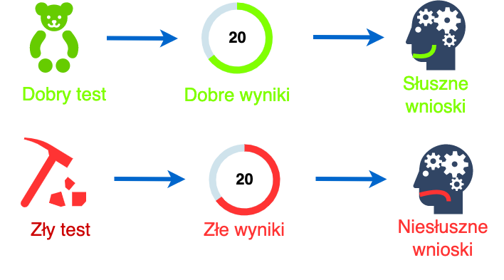

Krótkie wprowadzenie do psychometrii
Małgorzata Basińska
Cel zajęć
Po tych zajęciach będziecie wiedzieć:
- co jest przedmiotem psychometrii…
- …i po co się jej uczycie
- co to jest test psychologiczny
- jakie są kryteria dobroci testu
- jakie są podstawy świadomego i etycznego stosowania testów
Co jest przedmiotem psychometrii
Definicja psychometrii
Dziedzina zajmująca się opisem i mierzeniem
zjawisk i procesów psychicznych,
zwłaszcza teorią i konstrukcją
narzędzi służących do tego celu (Zawadzki & Hornowska, 2008)
Jak nazywa się takie narzędzie?
Na jakie pytania odpowie Wam dorobek psychometrii
- Jak odróżnić dobry test psychologiczny od złego
- Jak tworzyć testy
- Jak konstruować pozycje testowe
- Na jakiej podstawie spośród wielu propozycji pozycji testowych wybrać te najlepsze
- Jak przekształcić odpowiedzi w teście na wynik testu
- Jak przebiega adaptacja testu stworzonego w innym języku i w innych warunkach kulturowych
- W jakim stopniu możemy z wyniku testu wyciągać wnioski na temat mierzonej cechy
- Jak dokładnie wynik testu odzwierciedla rzeczywisty poziom cechy, którą mierzy test
- Jak interpretować wyniki testów
- Jak oceniać to, czy i na ile test jest bezstronny
Naczelne pytanie psychometrii

Dlaczego psychometria jest ważna?

Dlaczego psychometria jest ważna?

Testy psychologiczne - definicja i cechy testu psychologicznego
Co to jest test
Definicja testu wg “Standardów”
Narzędzie lub procedura pozwalające
na otrzymanie próbki zachowań osoby badanej
w określonej dziedzinie oraz na standaryzowany
sposób ich oceny lub punktacji (AERA, APA, & NCME, 2007)
Co to jest test psychologiczny
Definicja testu wg S. Urbiny
- Systematyczna procedura
- otrzymywania próbek zachowania,
- istotnych dla poznawczego, afektywnego
lub interpersonalnego funkcjonowania,
- oraz punktacji i oceniania tych próbek - zgodnie ze standardami. (Urbina, 2014)
Oglądamy testy!
- Jaka próbka zachowania jest zbierana przy pomocy testu?
- Innymi słowy: co badany ma zrobić w trakcie testu?
5 minut na przygotowanie
Jakie są rodzaje testów Hornowska (2009)
- indywidualny vs grupowy
- standaryzowany vs niestandaryzowany
- właściwości poznawyczych vs afektywnych
- słowne vs bezsłowne
- szybkości vs mocy
- obiektywne vs nieobiektywne
- zorientowane na normy vs zorientowane na kryterium
Czy to test psychologiczny?

Czy to test psychologiczny?

PRZERWA 5 MINUT
Warunki, które powinien spełniać test psychologiczny
- Obiektywność
- Standaryzacja
- Rzetelność (będą osobne zajęcia)
- Trafność (będą osobne zajęcia)
- Normalizacja (będą osobne zajęcia)
- Właściwa adaptacja (będą osobne zajęcia)
Warunki, które powinien spełniać test psychologiczny
Rudner, L. M. (1994). Questions to ask when evaluating tests. Practical Assessment, Research and Evaluation, 4(2). Retrieved from https://www.pareonline.net/getvn.asp?v=4&n=2
Oglądamy testy cd.
- Znajdź w podręczniku testowym informacje o:
- Warunkach, w jakich powinien być przeprowadzany test (np. indywidualnie/grupowo)
- Zasadach, które muszą być przestrzegane w sytuacji testowej (czy można wracać do poprzednich pytań, jakiej pomocy badający może udzielić badanemu?)
- Instrukcji dla badanego
- Procedurze oceny wyników
10 minut na oglądanie
Co zrobić, by test psychologiczny był obiektywny i wystandaryzowany?
- wymagania wobec badającego
- wymagania wobec badanego
- wymagania podczas oceny wyników i ich interpretacji
Dlaczego psychometria jest ważna cd.
- Testy są jednym z podstawowych narzędzi stosowanych przez psychologa
- Psychometria pozwoli Wam odróżnić dobry test od złego
- Żaden test psychologiczny nie jest idealnym narzędziem
- Żeby odpowiedzialnie stosować testy, trzeba wiedzieć, jakie są warunki i ograniczenia ich stosowania
Jak etycznie, rozważnie i z szacunkiem dla osób badanych stosować testy psychologiczne
Co może wpływać na to, że ktoś uzyskuje niższy bądź wyższy wynik w teście inteligencji?
Jakie mogą być negatywne konsekwencje stosowania testów psychologicznych? (Hornowska, 2009)
- wąskie rozumienie zagadnienia inteligencji (i innych cech) i jej determinantów
- etykietowanie i stygmatyzacja
- biurokratyczne podejmowanie decyzji na temat osób badanych
- tendencja badających do przyjmowania roli wyroczni determinującej losy innych ludzi
Odpowiedzialność użytkowników testów (czytaj: psychologów stosujących testy)
- Turner, S. M., DeMers, S. T., Fox, H. R., & Reed, G. M. (2001). APA’s guidelines for test user qualifications: An executive summary. American Psychologists, 56(12), 1099–1113. http://dx.doi.org/10.1037/0003-066X.56.12.1099
- STANDARDY!
Odpowiedzialność użytkowników testów
- posiadanie odpowiednich kwalifikacji
- przestrzeganie praw osób badanych
- unikanie stronniczości w stosowaniu testów
- unikanie etykietowania w zakresie statusu intelektualnego, choroby etc.
- refleksyjne podejmowanie decyzji na temat użycia testów psychologicznych
- odpowiedni dobór metod
Prawa osób badanych
Joint Committee on Testing Practices. (n.d.). Rights and Responsibilities of Test Takers: Guidelines and Expectations. Retrieved November 2, 2019, from https://www.apa.org/science/programs/testing/rights
Prawa osób badanych (Hornowska, 2009)
- Prawo do wyrażenia świadomej zgody na badanie testem
- Prawo do poznania i zrozumienia wyników testowania
- Prawo do ochrony przed stygmatyzowaniem
- Czy matka Jo Ann rzeczywiście powinna przegrać w sądzie?
- Prawo do zachowania tajemnicy o wynikach testowania
- Prawo do prywatności
Co jest konieczne, by pacjent wyraził świadomą zgodę???
Wybrane prawa osób badanych (Urbina, 2014)
- Prawo do otrzymania przed testowaniem informacji:
- o celu testowania
- o wykorzystywanych testach
- czy wyniki testu będą raportowane badanemu lub innym osobom
- o planowanym wykorzystaniu wyników
Wybrane prawa osób badanych cd. (Urbina, 2014)
- Prawo do wiedzy, czy test jest opcjonalny i do poznania konsekwencji wzięcia lub niewzięcia udziału w teście, wypełnienia całego testu lub anulowania wyników.
- Prawo do otrzymania wyjaśnienia wyników testu w rozsądnym czasie i z wykorzystaniem powszechnie zrozumiałych terminów.
- Prawo do utrzymania wyników testu w tajemnicy w ramach obowiązującego prawa.
Stosowanie testów w grupach o specjalnych potrzebach
STANDARDY!!!
Podstawowe standardy podczas badania osób niepełnosprawnych
Na podstawie Standardów (AERA et al., 2007)
UPEWNIJ SIĘ, ŻE WYNIK TESTU MA ZWIĄZEK Z BADANYM KONSTRUKTEM, A NIE JEST WYNIKIEM NIEPEŁNOSPRAWNOŚCI
- Dotrzyj do badań na temat wpływu wybranego typu niepełnosprawności na poziom wykonania danego testu
- Jeśli to możliwe, zmodyfikowane testy powinny zostać poddane badaniom pilotażowym
- Jesli autorzy testu zalecają modyfikację dla osób niepełnosprawnych, powinni w podręczniku testowym podać uzasadnienie modyfikacji i ostrzeżenia dot. interpretacji
- Każda modyfikacja testu powinna być dostosowana do osoby badanej, ale z zachowaniem standardowych cech testu
To czy dostosowywać testy?
- UWAGA: KAŻDA MODYFIKACJA MOŻE WPŁYNĄĆ NA TRAFNOŚĆ TESTU
- UWAGA: KAŻDA MODYFIKACJA MOŻE WPŁYNĄĆ NA MOŻLIWOŚĆ ODNIESIENIA WYNIKÓW TESTU DO NORM
Strategie modyfikacji (AERA et al., 2007)
- modyfikowanie formatu prezentacji (duża czcionka, alfabet Braille’a)
- modyfikowanie formatu odpowiedzi
- modyfikowanie czasu badania
- modyfikowanie sytuacji badania testem
- wykonanie części testu
- wykorzystywanie testów zastepczych lub alternatywnych
Zadanie domowe
Zadanie domowe
Termin: 13.11.2019 godz. 23:59 Podaj przykład osoby, która Twoim zdaniem może mieć specjalne potrzeby w związku z sytuacją testową. Wskaż również konkretną sytuację testową. Ważne, żeby był to bardzo konkretny przypadek (przykłady poniżej). Opisz krótko, w jaki sposób można dostosować okoliczności przeprowadzenia testu w tej sytuacji (pamiętaj o standaryzacji), na co należy zwrócić szczególną uwagę podczas przeprowadzania testu/testów i analizowania wyników.
Literatura
Literatura
AERA, APA, & NCME. (2007). Standardy dla testów stosowanych w psychologii i pedagogice. Gdańsk: Gdańskie Wydawnictwo Psychologiczne.
Hornowska, E. (2009). Testy psychologiczne. Teoria i praktyka (4th ed.). Warszawa: Wydawnictwo Naukowe "Scholar".
Urbina, S. (2014). Essentials of Psychological Testing (II). Retrieved from https://books.google.pl/books?id=UnHrAwAAQBAJ
Zawadzki, B., & Hornowska, E. (2008). Psychometria. Konstrukcja i adaptacja testów psychologicznych. In J. Strelau & D. Doliński (Eds.), Psychologia. Podrȩcznik akademicki, tom 1 (I, pp. 847–893). Gdańsk: Gdańskie Wydawnictwo Psychologiczne.